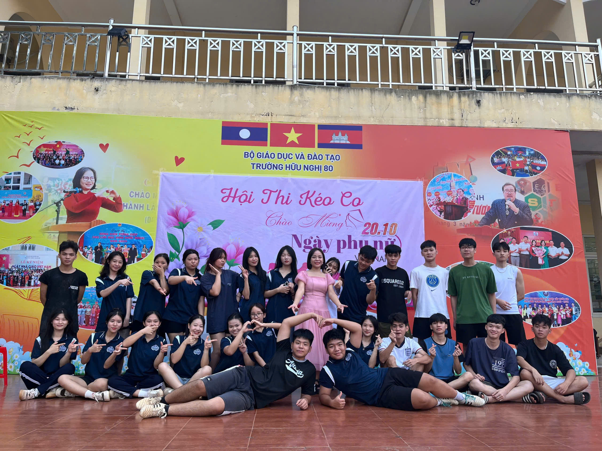
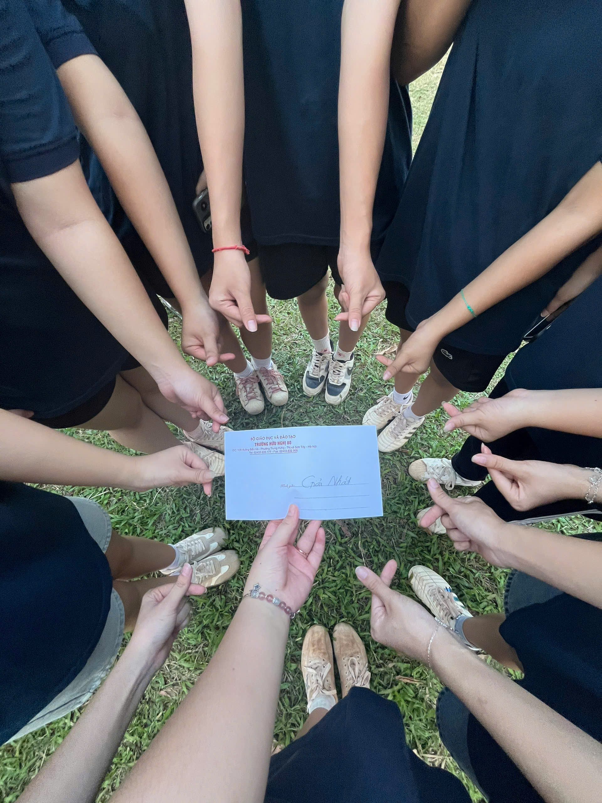
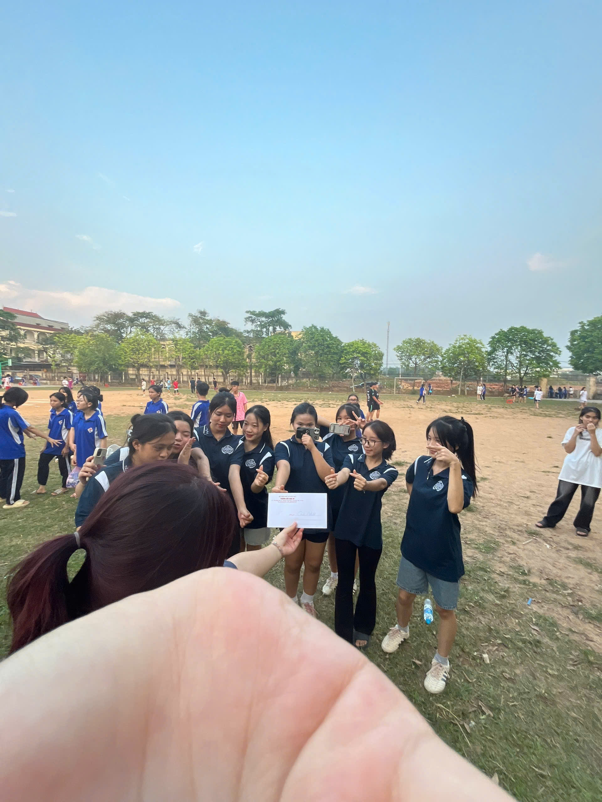
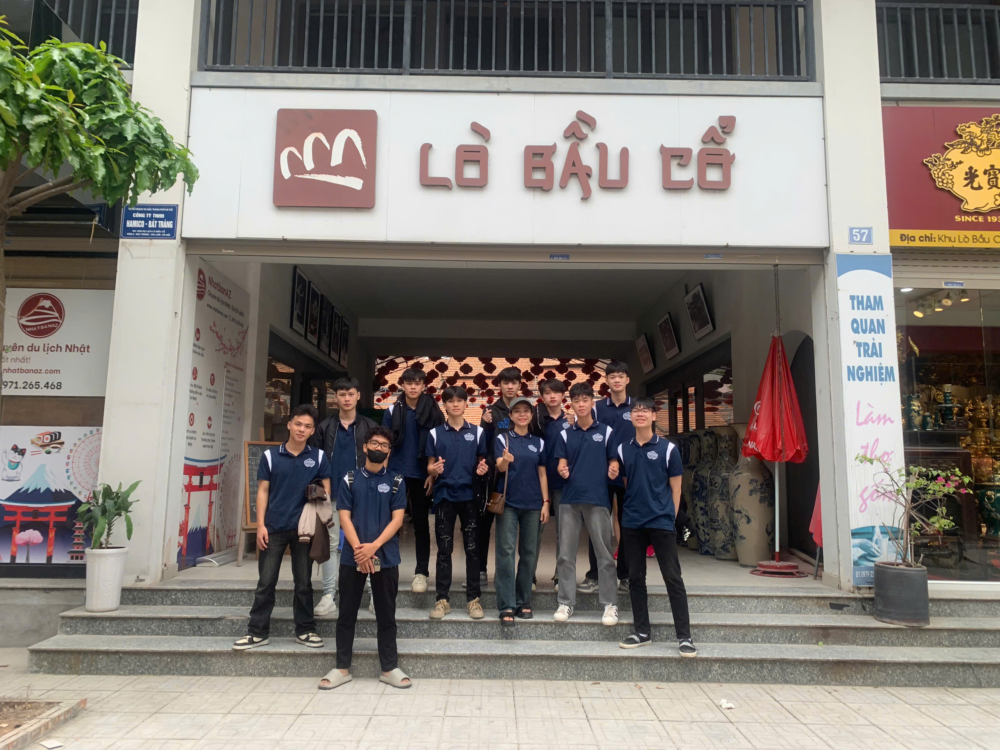
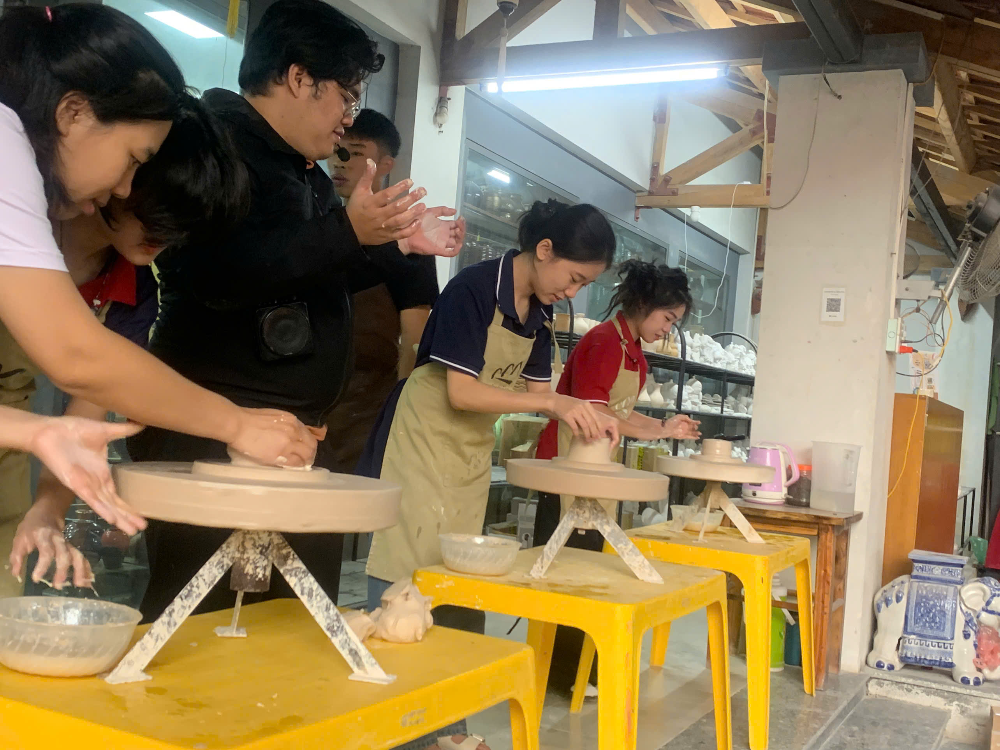
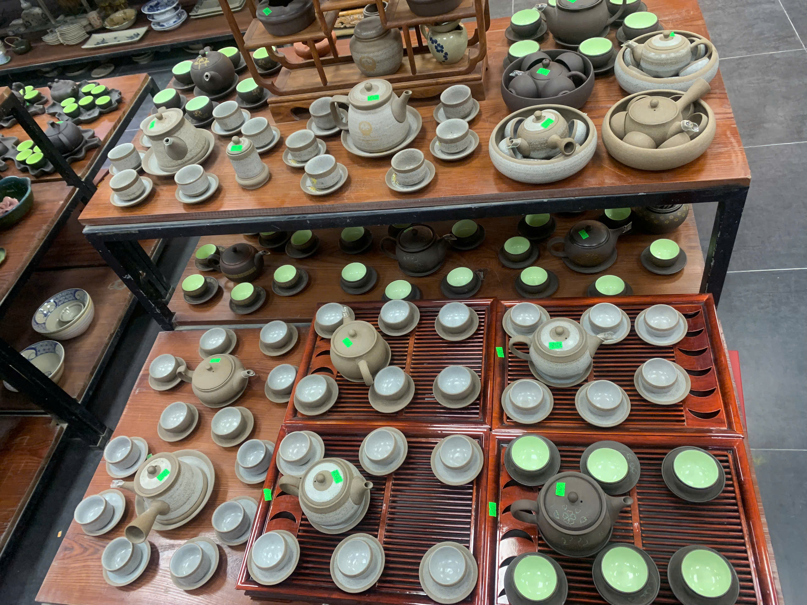

TIN VUI TỪ 12A10: CHIẾN THẮNG VẺ VANG TRONG GIẢI KÉO CO
💪 SỨC MẠNH ĐOÀN KẾT – VINH QUANG CHIẾN THẮNG 🎉
Vào ngày 17/10/2024, tại sân trường Hữu Nghị 80, không khí sôi động của giải kéo co giữa các lớp đã làm bùng cháy tinh thần thể thao và đoàn kết của toàn thể học sinh. Và thật tự hào, tập thể lớp 12A10 đã xuất sắc giành GIẢI NHẤT, khẳng định bản lĩnh và sức mạnh của mình!

🔥 Hành trình đầy cảm xúc
Ngay từ vòng loại, đội kéo co của 12A10 đã thể hiện sức mạnh vượt trội với những trận đấu gay cấn. Mỗi vòng thi là một thử thách, nhưng với chiến thuật hợp lý, tinh thần đồng đội bền chặt và sự cổ vũ nhiệt tình từ các bạn học sinh, đội đã từng bước tiến vào trận chung kết.
Trận chung kết diễn ra đầy kịch tính khi đối thủ cũng là một đội mạnh, xứng tầm. Nhưng với ý chí kiên cường, sự phối hợp nhịp nhàng và quyết tâm cao độ, các thành viên của 12A10 đã kéo căng dây chiến thắng trong sự vỡ òa của niềm vui và tự hào!

🎊 Niềm vui chiến thắng
Chiến thắng này không chỉ là phần thưởng cho sự nỗ lực của đội kéo co mà còn là niềm tự hào của cả tập thể 12A10. Đây là minh chứng rõ ràng nhất cho tinh thần đoàn kết, sự kiên trì và ý chí không bỏ cuộc.
Một lần nữa, xin chúc mừng 12A10 với chiến thắng tuyệt vời này! Mong rằng tinh thần ấy sẽ tiếp tục lan tỏa để chúng ta cùng nhau gặt hái thêm nhiều thành tích đáng tự hào hơn nữa!

💖 12A10 – ĐOÀN KẾT LÀ CHIẾN THẮNG! 💖
🌿 CHUYẾN ĐI BÁT TRÀNG – HÀNH TRÌNH TRẢI NGHIỆM ĐÁNG NHỚ 🎨
Vào ngày 24/11/2024, tập thể lớp 12A10 đã có một chuyến tham quan đầy ý nghĩa đến làng gốm Bát Tràng – một trong những làng nghề truyền thống lâu đời và nổi tiếng nhất Việt Nam. Chuyến đi không chỉ giúp chúng mình hiểu hơn về nghệ thuật làm gốm mà còn mang lại những kỷ niệm khó quên bên nhau.
🚌 Khởi hành với tinh thần hào hứng
Ngay từ sáng sớm, cả lớp đã tập trung đông đủ tại cổng trường, ai cũng háo hức, mong chờ những điều thú vị phía trước. Trên xe, không khí vô cùng sôi động với những tràng cười giòn tan, những bài hát sôi nổi và cả những câu chuyện rôm rả.

🏺 Trải nghiệm làm gốm – thử thách khéo léo
Đến Bát Tràng, lớp chúng mình được tham quan các xưởng gốm, tận mắt chứng kiến từng công đoạn tạo nên một sản phẩm tinh xảo: từ nặn đất, tạo hình, vẽ họa tiết đến nung gốm. Đặc biệt, ai cũng phấn khích khi được tự tay nhào nặn và tạo ra sản phẩm của riêng mình. Những chiếc cốc méo, con heo đất ngộ nghĩnh hay chiếc bát chưa tròn đều là những "tác phẩm nghệ thuật" có một không hai, minh chứng cho sự sáng tạo (và cả sự vụng về đáng yêu) của 12A10.

🍽 Thưởng thức ẩm thực và mua sắm quà lưu niệm
Sau khi thử sức với nghề làm gốm, cả lớp cùng nhau khám phá ẩm thực Bát Tràng. Những chiếc bánh gốm nướng giòn rụm, bát bún chả thơm phức hay ly trà đá mát lạnh giữa trời trưa oi ả làm chuyến đi thêm phần trọn vẹn. Không quên, chúng mình còn ghé thăm khu chợ gốm để mua những món quà lưu niệm đáng yêu tặng người thân và bạn bè.

💖 Kết thúc chuyến đi với bao kỷ niệm đẹp
Một ngày trải nghiệm tại Bát Tràng không chỉ giúp chúng mình thêm hiểu về truyền thống dân tộc mà còn gắn kết tình bạn của tập thể 12A10. Chuyến đi khép lại với những nụ cười, những bức ảnh "sống ảo" đẹp lung linh và những chiếc túi nặng trĩu quà.
Chắc chắn, chuyến đi Bát Tràng sẽ trở thành một phần ký ức đẹp trong năm cuối cấp của chúng ta. Mong rằng trong thời gian tới, lớp mình sẽ có thêm nhiều hành trình đáng nhớ như thế này!
📸 12A10 – Cùng nhau đi, cùng nhau vui, cùng nhau nhớ mãi! 🚀
🧧TẾT VIỆT 2024 - XUÂN ĐOÀN KẾT, TẾT YÊU THƯƠNG 🧧
🧧 Đây là dịp để các bạn HS Việt Nam giới thiệu, tái hiện và quảng bá những nét đẹp văn hóa tết truyền thống của cả 3 miền Bắc – Trung – Nam thông qua các trò chơi dân gian, hội chợ xuân, trang trí không gian tết Việt và làm các món ăn truyền thống,... Đặc biệt trong chương trình không thể hình ảnh "Ông Đồ" cho chữ mỗi độ tết đến xuân về, đây là một phong tục đẹp của người Việt thể hiện sự hiếu học cũng như mong muốn những điều may mắn, tốt lành, tài lộc cho năm mới.
 🧧Đến với Tết Việt Hữu Nghị 80, các bạn LHS Lào, Campuchia có cơ hội được tự tay trang trí không gian tết Việt, trải nghiệm việc đi chợ, nấu một mâm cỗ tất niên mang đậm văn hoá tết Việt. Đồng thời, vận dụng vốn tiếng Việt có được để thuyết trình, giới thiệu về những món ăn truyền trong ngày tết của người Việt.
🧧Đến với Tết Việt Hữu Nghị 80, các bạn LHS Lào, Campuchia có cơ hội được tự tay trang trí không gian tết Việt, trải nghiệm việc đi chợ, nấu một mâm cỗ tất niên mang đậm văn hoá tết Việt. Đồng thời, vận dụng vốn tiếng Việt có được để thuyết trình, giới thiệu về những món ăn truyền trong ngày tết của người Việt.
 🪷 Chương trình để lại ấn tương cho các em hs Việt Nam là sự hiểu biết của các ac lhs Lào lhs CPC về tết nguyên đán Việt Nam về văn hoá ngày tết, đặc biệt những chiếc bánh chưng mâm cỗ truyền thống của Việt Nam bởi sự sáng tạo tuyệt vời của các nhóm TẾT TÂY BẮC, TẾT HÀ NỘI, TẾT HUẾ, TẾT TÂY NGUYÊN, TẾT SÀI GÒN VÀ TẾT MIỀN TÂY với không gian tết, món ăn truyền thống và những tiết mục văn nghệ đặc sắc cho từng vùng miền. Bên cạnh đó là phần thi nhảy cổ động gay cấn và sôi động đến từ 11 chi đoàn xuất sắc nhằm chào mừng 74 năm ngày truyền thống Học sinh, sinh viên Việt Nam.
Nhân dịp tết Giáp Thìn, Đoàn trường Hữu Nghị 80 xin kính chúc quý thầy cô giáo cùng toàn thể cán bộ nhân viên nhà trường một năm mới thật nhiều sức khỏe, an khang, thịnh vượng.
Chúc các bạn HS, LHS một năm mới bình an, tràn ngập hạnh phúc và thành công 🎉
🪷 Chương trình để lại ấn tương cho các em hs Việt Nam là sự hiểu biết của các ac lhs Lào lhs CPC về tết nguyên đán Việt Nam về văn hoá ngày tết, đặc biệt những chiếc bánh chưng mâm cỗ truyền thống của Việt Nam bởi sự sáng tạo tuyệt vời của các nhóm TẾT TÂY BẮC, TẾT HÀ NỘI, TẾT HUẾ, TẾT TÂY NGUYÊN, TẾT SÀI GÒN VÀ TẾT MIỀN TÂY với không gian tết, món ăn truyền thống và những tiết mục văn nghệ đặc sắc cho từng vùng miền. Bên cạnh đó là phần thi nhảy cổ động gay cấn và sôi động đến từ 11 chi đoàn xuất sắc nhằm chào mừng 74 năm ngày truyền thống Học sinh, sinh viên Việt Nam.
Nhân dịp tết Giáp Thìn, Đoàn trường Hữu Nghị 80 xin kính chúc quý thầy cô giáo cùng toàn thể cán bộ nhân viên nhà trường một năm mới thật nhiều sức khỏe, an khang, thịnh vượng.
Chúc các bạn HS, LHS một năm mới bình an, tràn ngập hạnh phúc và thành công 🎉